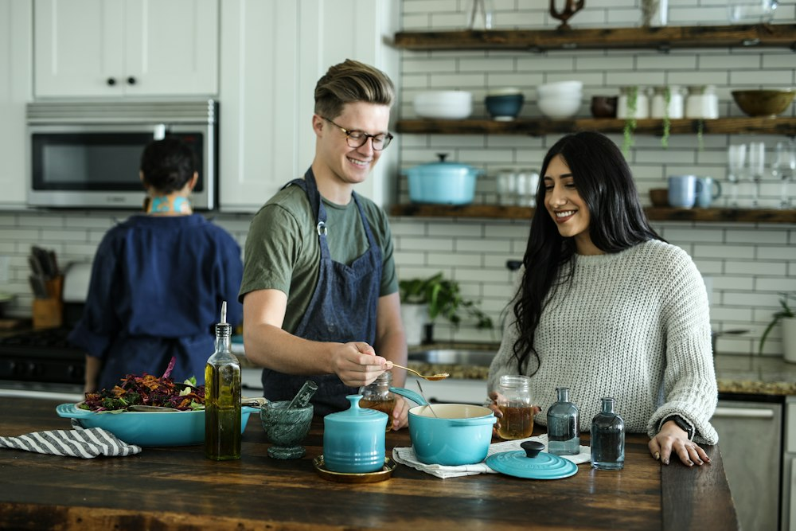
THE CREATIVE SPIRIT
Curiosity in the kitchen
Trying, tasting, learning, and finding the small adjustments that make a dish feel right.
 A DIFFERENT WAY TO LOOK AT DINNER ↗
A DIFFERENT WAY TO LOOK AT DINNER ↗Find a new flavour, explore the room, or get a few people together.
EXPLORE THE PHOTO JOURNAL ↗DISCOVER SOMETHING TO SHARE ↗A meal is never just what is on the plate.
It is the welcome, the conversation, and the feeling you take with you.
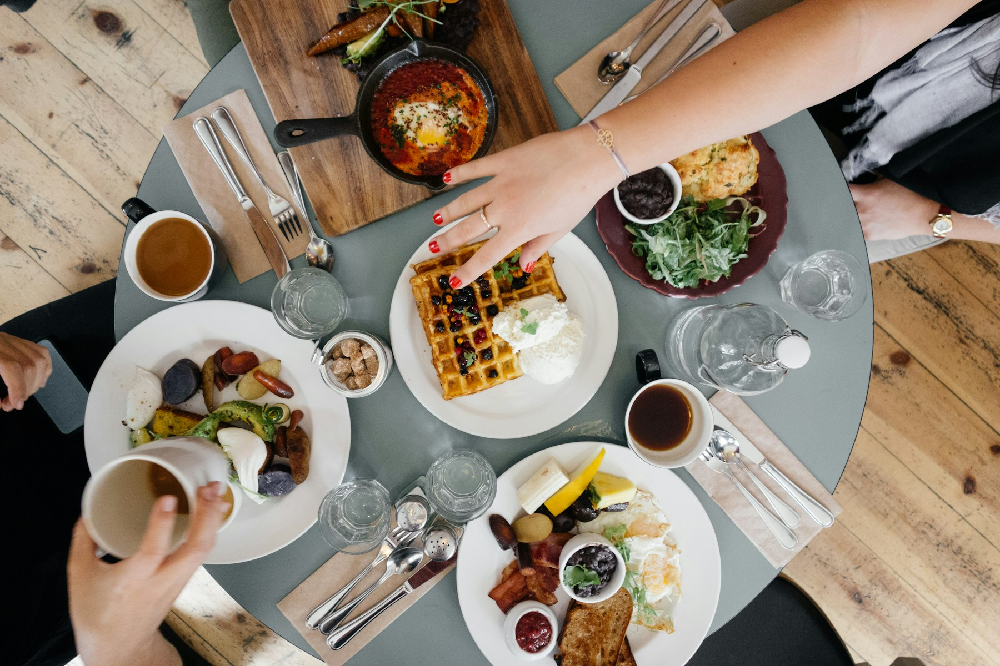
MADE FOR HUMAN CONNECTIONCreate a place where people can arrive as they are, settle in, and feel looked after.
That is the idea at the heart of FoodieHub. Not a meal saved only for a special occasion, but a space for the everyday moments that deserve a little more attention.
A catch-up that runs longer than planned. A quiet lunch to yourself. A table full of familiar faces. We see hospitality as making room for all of them.
COME AS YOU ARE ↗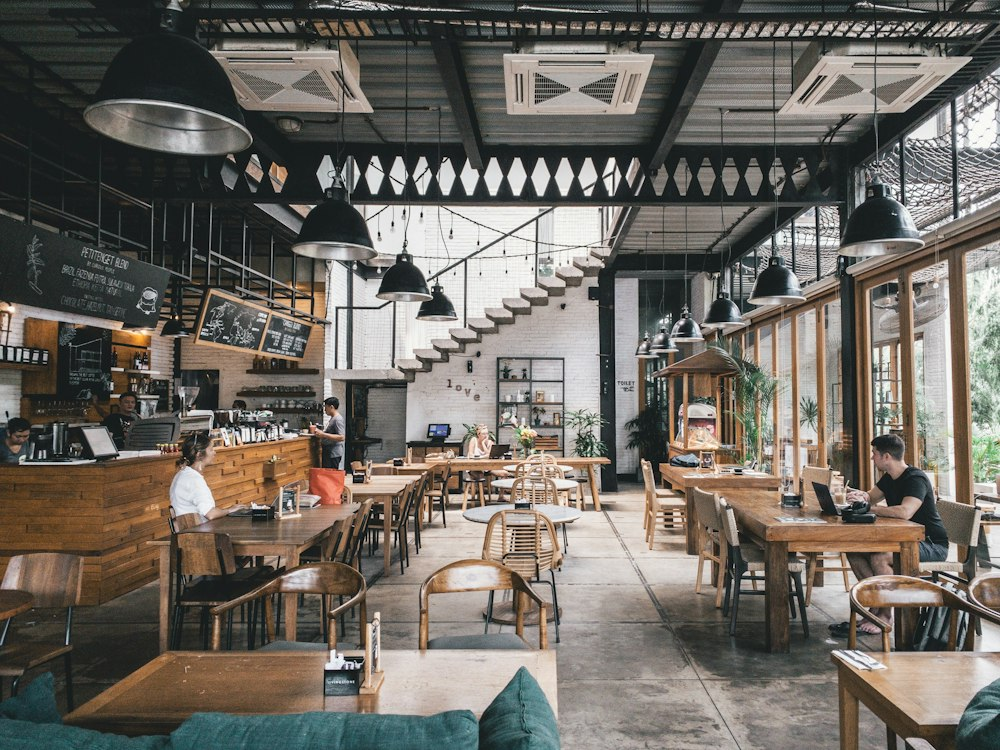
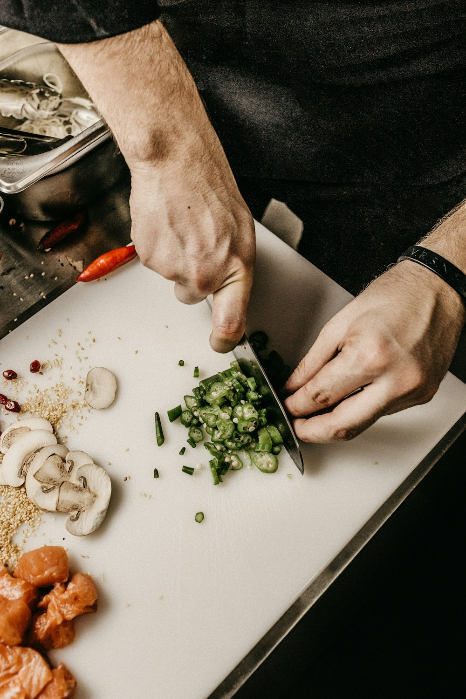
ATTENTION IS AN INGREDIENT.We are drawn to food with character: the fragrance of a freshly cut herb, the sweetness of a roasted vegetable, the balance of a sauce that brings everything together.
Flavours that complement each other, with each ingredient given a reason to be there.
Knowing when to add a little more attention, and when to let simplicity speak.
A plate that feels complete, satisfying, and ready to become part of your day.
A welcoming experience is a collaboration. From the first preparation to the last goodbye, every role adds something that matters.

Trying, tasting, learning, and finding the small adjustments that make a dish feel right.
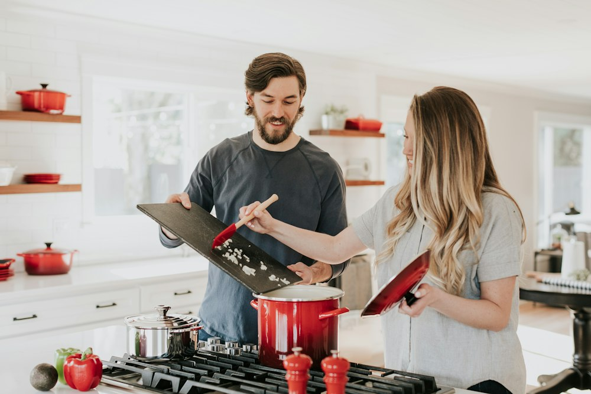
Preparation and teamwork bring calm, consistency, and purpose to the pace of a meal.
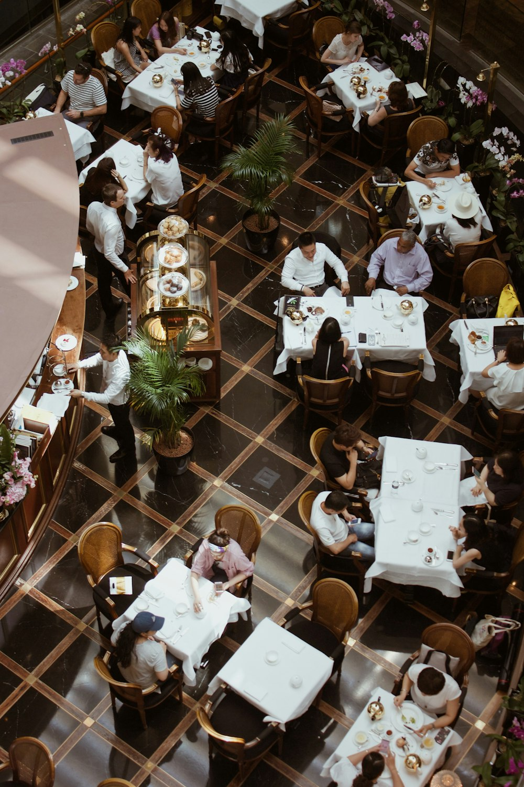
Listening, noticing, and leaving room for the little details that make someone feel at home.
Our approach begins with curiosity about ingredients: what is in season, what tastes its best, and how to make thoughtful use of it.
Let changing colours, textures, and flavours bring variety to the table.
Look beyond appearance to the quality and character an ingredient can offer.
Plan carefully and look for useful ways to turn small details into something delicious.
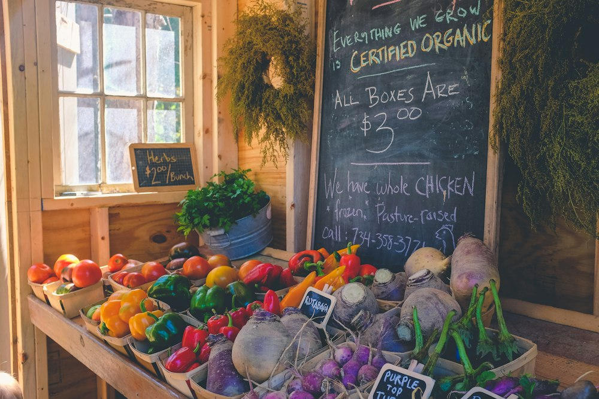
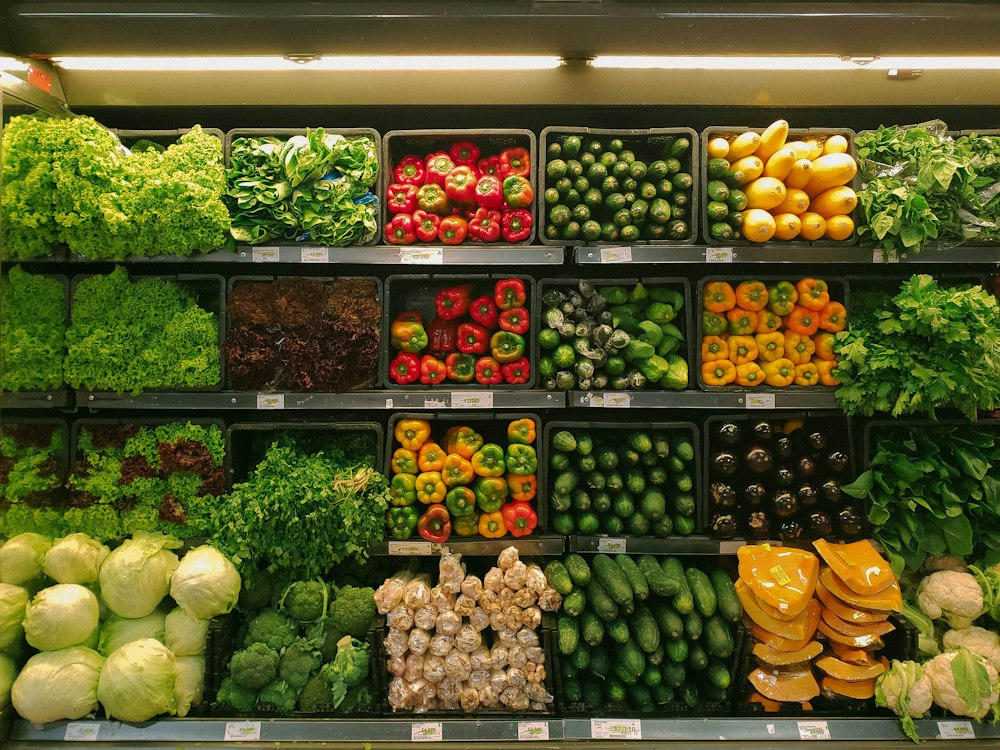
COLOUR. TEXTURE. POSSIBILITY.Explore the small rituals that connect the kitchen to the table.
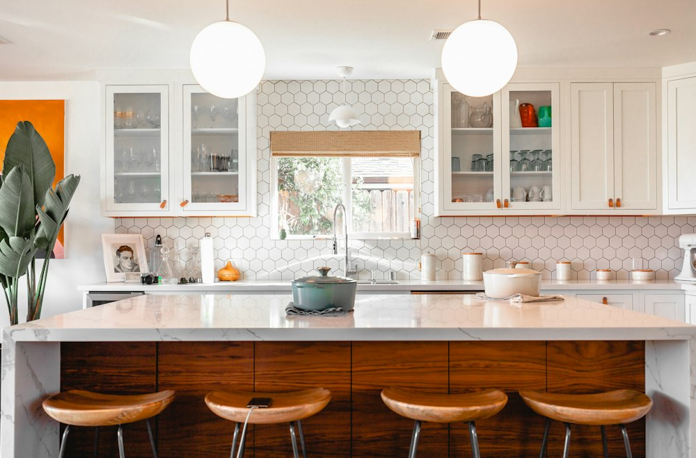
An organised space creates room for a better rhythm. The little things are considered before the first ingredient reaches the board.
Some days call for a lively table. Others call for a quieter corner. What matters is finding a little time that feels like yours.
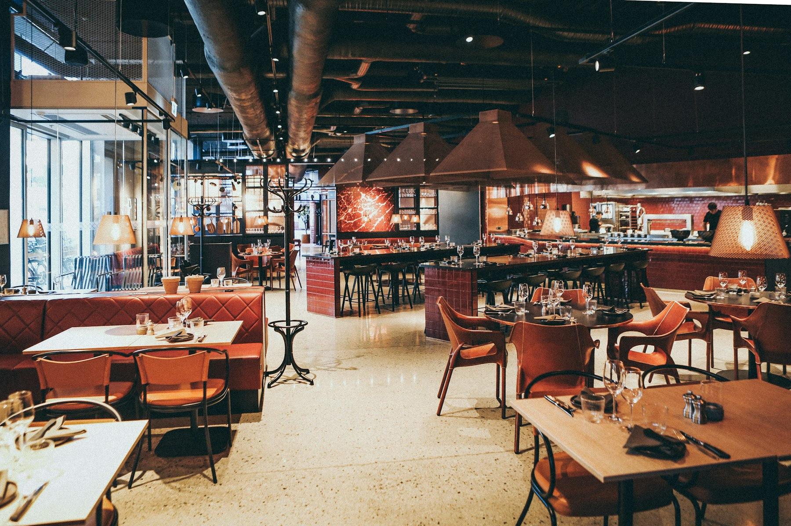
TAKE A CLOSER LOOK ↗Step out of the rush and give yourself a proper pause.
A comfortable backdrop for stories, laughter, and catching up.
Make an ordinary evening feel like something to remember.
Good intentions become meaningful through everyday choices. These are the principles that guide the experience we want to create.
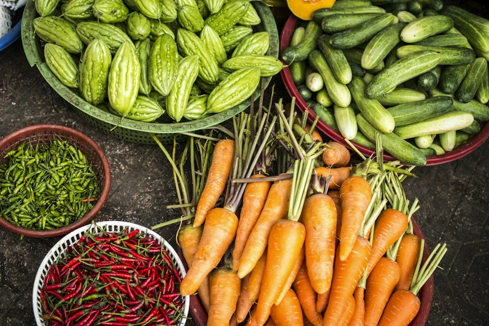
Thoughtful planning, careful storage, and creative use of ingredients are practical ways to treat food with respect. Progress starts with noticing what can be done better.
A preference, a question, or an ingredient you need to avoid deserves a real conversation. Tell us what matters to you before ordering so we can help you choose.
There is always another technique to practise, another combination to consider, and another way to make an experience more welcoming.
Hospitality begins with kindness. We want the welcome to feel as considered as the meal, whether you are gathering a group or taking a moment for yourself.
Bring your favourite people, or simply bring yourself.
We would love to be part of the moments you make next.